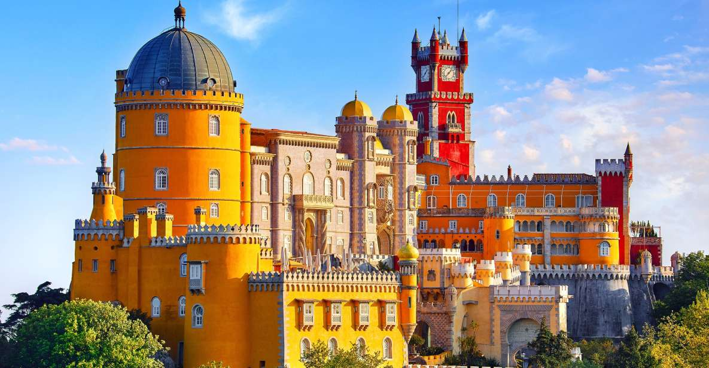
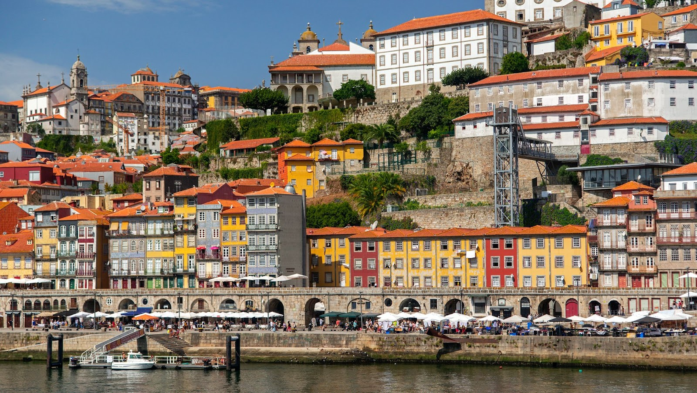
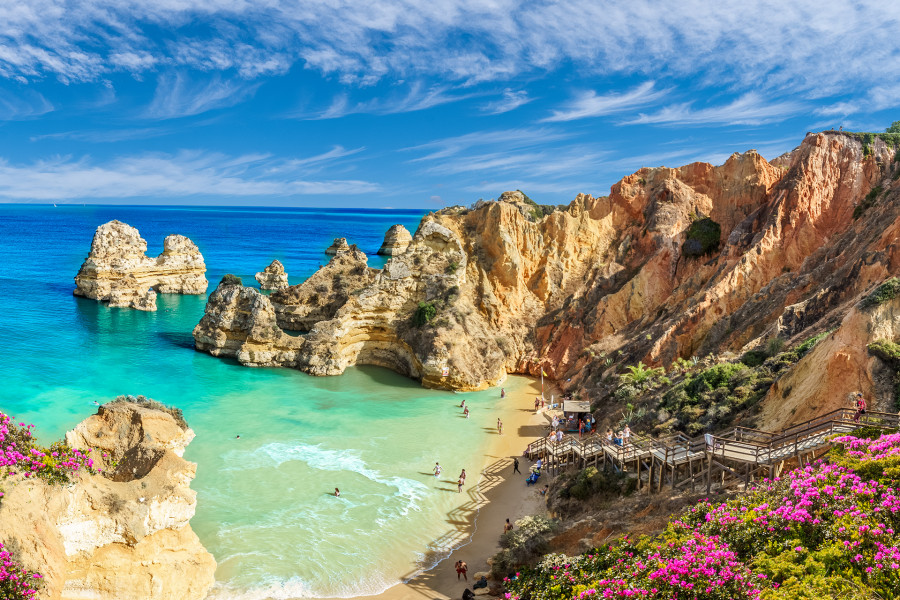

Monuments
Portugal is home to some of Europe’s most captivating landmarks — from the Tower of Belém to the palaces of Sintra and the historic
streets of Lisbon. Each monument tells a story, a piece of history that shaped the nation. Discover the beauty, culture, and timeless
architecture that make Portugal an unforgettable destination.
SHOW MORE




Food
Portuguese cuisine is known for its bold flavors, simple techniques, and deep connection to the sea. From freshly grilled sardines
and creamy bacalhau dishes to warm custard tarts like pastel de nata, every bite tells a story of tradition and coastal life. Rooted
in family recipes and centuries of exploration, Portuguese food is honest, comforting, and full of soul. Discover the tastes that
reflect Portugal’s history, its oceans, and its love for good, shared meals.
SHOW MORE
Fun-Facts
Portugal is one of the oldest countries in Europe, with borders that have remained almost unchanged since the 12th century.
Lisbon is older than Rome — it was founded over 400 years before the Roman Empire even existed.
Portugal is the world’s largest producer of cork, supplying around half of the global cork market (yes, including wine corks).
Pastéis de nata, the famous custard tarts, were originally created by monks in Lisbon and are still one of the most iconic desserts in the world.
Portuguese explorers were pioneers of global exploration, opening sea routes to Africa, Asia, and South America during the Age of Discovery.
Portuguese is spoken by over 260 million people worldwide, making it one of the most widely spoken languages on the planet.